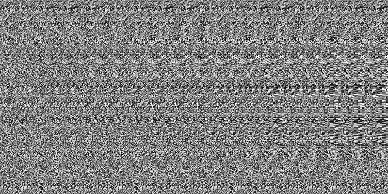
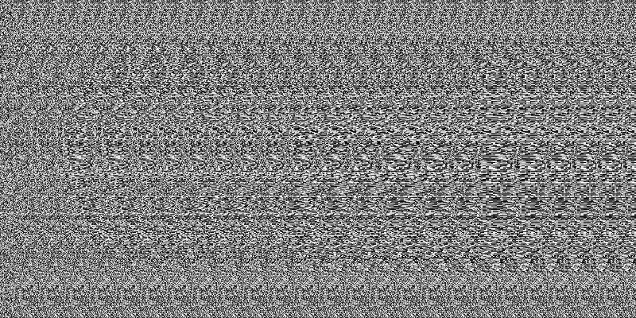
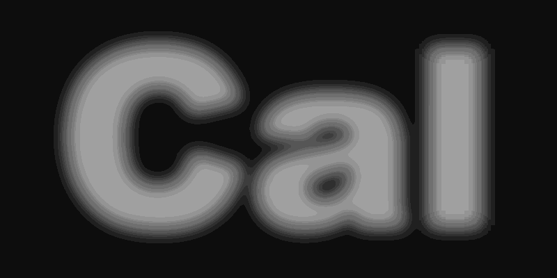
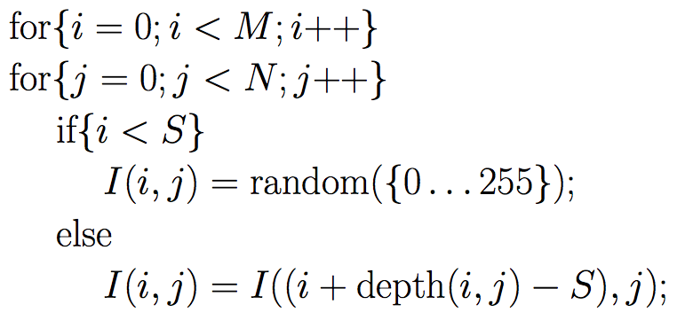
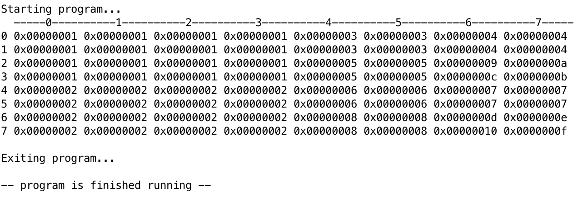
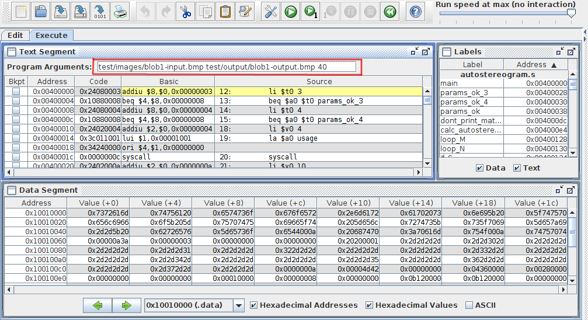
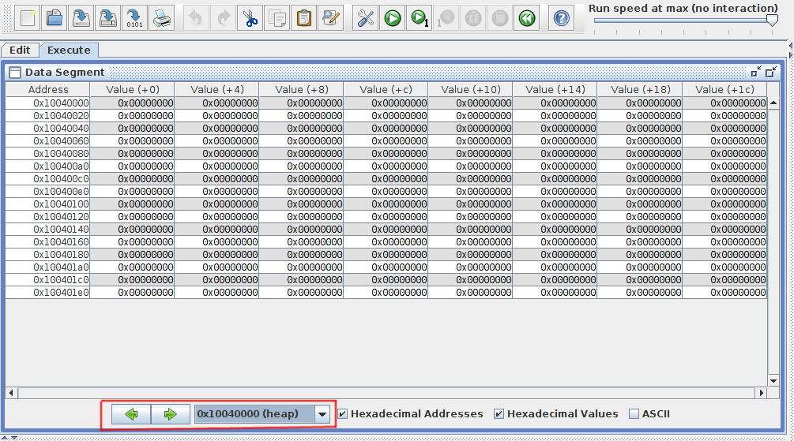

Parte 2
En la primera parte del proyecto vimos un sencillo algoritmo de computer vision que genera mapas de desplazamiento a partir de imagenes stereo. También vimos como comprimir los mapas de desplazamiento usando la estructura de datos quadtree. En esta parte implementará una tarea complementaria. Vamos a utilizar mapas de desplazamiento para generar los llamados random dot autostereograms.Los random dot autostereograms son como imagenes aleatorias que cuando se ven de cierta manera (wall-eyed o cross-eyed) dan a su cerebro la ilusión de una imagen 3D. Si piensa en todo ello, el proyecto completo le permitirá capturar datos 3D de un entorno y luego visualizarlos en un 3D autostereogram!!!
Como un complemento a la compresión quadtree, usted deberá implementar un procedimiento de "decompresión" que devuelve un mapa de desplazamiento a partir de una estructura quadtree.
Los random-dot-autostereograms también son conocidos con el nombre de Magic Eye. Son muy interesantes, pero algunas personas pueden tener dificultad para ver la escena 3D. De hecho, hay un cierto porcentaje de la población que es incapaz de ver la escena 3D en absoluto. Posiblemente algunas persona de la clase no podrán verlos. Pedimos disculpas por eso! Para tener más información sobre los métodos y la visualización de autostereograms, le recomendamos leer este artículo de Wikipedia. En particular, vea la sección de técnicas de visualización. En el primer autostereogram a continuación se mostrará un relieve de "Cal" cuando se ve wall-eyed. Cuando se vé cross-eyed, se verá como una escultura o un molde. El segundo autostereogram se invierte y se mostrará en relieve cuando se ve cross-eyed y como escultura o molde cuando se vé wall-eyed.
 
Empezando
Copie los archivos necesarios en su directorio de trabajo, introduciendo el siguiente comando:
$ git clone https://github.com/cc-3/PJ1_2.git
Los archivos que necesita modificar son:
-
calc_autostereogram.s: Crea un autostereogram. Debe implementar la funcióncalc_autostereogram(). -
lfsr_random.s: Genera números aleatorios utilizando un LFSR. Debe implementar la funciónlfsr_random(). -
quad2matrix.s: Convierte un quadtree en la imagen original. Debe implementar la funciónquad2matrix().
Usted es libre de definir e implementar funciones de ayuda adicionales, pero sólo puede hacerlo en calc_autostereogram.s, lfsr_random.s, o quad2matrix.s. Los cambios a cualquier otro archivo se sobreescribirán durante su calificación.
El resto de los archivos son parte de la estructura del proyecto. Puede ser útil examinar todos los archivos.
-
autostereogram.s: El programa principal (aquí se define el main) para calc_autostereogram. Enlaza todos los demás archivos también. -
check.py: Ejecuta algunas pruebas con su implementación. -
debug_random.s: Un reemplazo para lfsr_random (vea Debugging y Testing abajo). -
Makefile: No tenemos que compilar nada para este proyecto.No es muy útil. -
mars: Un bash script que inicia mars con opciones de linea de comandos. -
Mars4_5.jar: El simulador de MIPS que usaremos. -
matrix.s: El programa principal para quad2matrix. Enlaza los demás archivos también. -
print_helpers.s: Algunas funciones de ayuda para imprimir valores. -
print_matrix.s: Una función de ayuda para imprimir una matriz 2D de un tamaño arbitrario. -
quad2matrix_data.s: Un test case para quad2matrix. -
random.s: El programa principal para lfsr_random. Enlaza todos los demás archivos también. -
utils.s: Funciones de ayuda para el programa.
Parte A
Su primera tarea es implementar el generador de autostereograms, como los ejemplos de introducción en arriba. Para implementar el generador de autostereograms, primero necesita crear una función para generar números pseudo-aleatorios.
Edite la función en lfsr_random.s para implementar el 16-bit LFSR del Lab 3, y edite la función calc_autostereogram.s para implementar el algoritmo autostereogram usando lfsr_random como un generador de números aleatorios.
Linear-Feedback Shift Register (LFSR) Pseudo Random Numbers Generator
Implemente el generador de números pseudo-aleatorios de 16-bit del lab 3, pero ahora en MIPS. Su función debe seguir exactamente las siguientes especificaciones. La solución en C está disponible para usted. Note que esta versión realiza la operación calculate-shift en un ciclo, 16 veces en total. Par el código del lab 3 sólo se realizaba un shift por llamada a la función, mientras que en esta versión se realizan 16 shifts por cada llamada a la función. Esto se hace con el fin de desplazar los 16 bits anteriores con 16 nuevos bits.

static uint16_t reg = 0x1;
for (int i = 0; i < 16; i++) {
uint16_t highest = ((reg >> 0) ^ (reg >> 2) ^ (reg >> 3) ^ (reg >> 5));
reg = (reg >> 1) | (highest << 15);
}
return reg;
No hay argumentos para lfsr_random. Debe usar la sección .data de lfsr_random.s para guardar su estado. Debe retornar un número de 16-bit (los 16 bits superiores de $v0 deben ser 0).
Su salida debe coincidir con la nuestra:
$ mars random.s
MARS 4.5 Copyright 2003-2014 Pete Sanderson and Kenneth Vollmar
26625
5185
27515
38801
56379
52819
14975
21116
38463
54726
38049
26552
4508
46916
37319
41728
23224
26004
11119
62850
Generando un autostereogram
El tipo particular de autostereogram que estaremos generando se conoce como random dot autostereogram. Para generarlo, necesitamos el LFSR pseudo-random generator y un mapa de desplazamiento. La siguiente imagen muestra el depth map para el primer autostereogram de los dos ejemplos anteriores. Para poder visualizarlo mejor, hemos escalado la intensidad (el depth map original es más oscuro).

Aquí esta en depth map sin escalar.
{kind=link}
Si I(i,j) es un stereogram con width=M y height=N nos gustaría crearlo utilizando el mapa de desplazamiento, depth(i,j). S representa el strip_size, que siempre es mayor que maximum displacement (en el depth map). El autostereogram I(i,j) puede ser creado de la siguiente manera:

De nuevo, en esta descripción, la imagen tiene width=M y height=N. Decimos que I(i, j) es el pixel de la imagen con coordenadas X=i, Y=j y depth(i, j) es el valor del depth map en X=i, Y=j. Definimos S como nuestro strip_size, que está a pocas columnas de pixeles en el lado izquierdo de la imagen. Como se puede deducir de la fórmula nos basamos en el "strip" y lo repetimos en la dirección X a lo largo del resto de la imagen, con un pequeño desplazamiento. La función random(A) selecciona una valor aleatorio del conjunto A.
Generador Autostereogram
Una vez que tenga la función lfsr_random, implemente la función calc_autostereogram. Por favor, siga exactamente estas especificaciones para asegurarnos de que su programa coincide con el nuestro. (Existen otras formas de generar un autostereogram, pero su código se calificará basado en estas especificaciones.)
Argumentos para calc_autostereogram:
- autostereogram - Un puntero a un array de unsigned char. Deberá llenar este arreglo.
- depth_map - Un puntero a un array de unsigned char. Este es el arreglo depth() en la fórmula del autostereogram.
- width
- height
- strip_size
Algunas aclaraciones:
- Siga la fórmula autostereogram proporcionada anteriormente para generar su autostereogram. Asegúrese de que su ciclo rellene la matriz columna por columna como en la fórmula.
- La coordenada (0, 0) está en la parte superior de la imagen. La coordenada (M-1, 0) está en la parte superior derecha. La coordenada (M-1, N-1) está en la parte inferior derecha de la imagen.
- Las columnas de 0 a S - 1 deben de tener el valor lfsr_random() & 0xff. Específicamente:
- Ignore el valor del depth map en esas columnas.
- Utilice sólo los 8 bits más bajos, a pesar de que se generan 16 bits aleatorios en cada llamada a nuestra función lfsr_random().
- Las columnas deS a M - 1 deben tener el valor I((i + depth(i, j) - S), j) donde i es la coordenada X y j es la coordenada Y del pixel actual.
- No necesita manejar los valores en el depth map que son menores que 0.
- No necesita manejar los valores en el depth map que son mayores o iguales al strip size, S.
- No necesita manejar strip_sizes que son mayores que el ancho de la imagen.
- Debe llamar a lfsr_random exactamente strip_size × height veces, y es necesario rellenar una columna de la matriz a la vez. Específicamente:
- Utilice el primer resultado de lfsr_random() en (0, 0). A continuación, en (0, 1). Luego en (0, 2). Etc.
- Después de llegar a ..., (0, N-2), (0, N-1), debe pasar a (1, 0).
{kind=link}
Utilice el generador autostereogram en MARS como sigue.
$ mars autostereogram.s pa INPUT_FILE.bmp OUTPUT_FILE.bmp 16
MARS 4.5 Copyright 2003-2014 Pete Sanderson and Kenneth Vollmar
...
Aquí hay algunos comandos de ejemplo que se pueden utilizar para generar autostereograms:
$ ./mars autostereogram.s pa test/images/blob1-input.bmp test/output/blob1-output.bmp 50 ... $ ./mars autostereogram.s pa test/images/blob2-input.bmp test/output/blob2-output.bmp 47 ...
Agrege la opción --verbose hasta el FINAL de la lista de argumentos para imprimir el depth_map y el autostereogram generado. (No añadir en cualquier lugar, excepto al final.)
Parte B
Su segunda tarea será la de tomar el quadtree que construyó en la parte 1 del proyecto y convertirlo de nuevo en la arreglo 1-D por filas (que representa una matriz de imagen 2-D). Recordemos que nuestra estructura para los nodos del quadtree es de la siguiente manera manera:
struct quadtree {
int leaf;
int size;
int x;
int y;
int gray_value;
qNode *child_NW, *child_NE, *child_SE, *child_SW;
};
Debe implementar la función quad2matrix.s. Se proporciona un puntero al root del quadtree, un puntero al primer elemento de la matriz que usted debe llenar, y el ancho de la matriz. Su función debe recorrer el árbol y llenar la matriz con los valores correctos para cada cuadrante.
Le proporcionamos la función print_matrix para ver la matriz de salida que está llenando. Los datos en quad2matrix_data.s son similares al los del ejemplo quadtree que hemos utilizado en las especificaciones. La salida para ello debería verse así

Estos son algunos consejos:
- Para ejecutar el programa, escriba ./mars matrix.s.
- Se le proporciona la matriz (en el archivo default: de 8 x 8; este tamaño puede cambiar por lo que no codifique su función para un tamaño predefinido) con todos los valores en 0.
- Cada elemento de la matriz es un byte (8 bits), no una palabra (word-32 bits).
- Asegúrese de probar su código con otra matriz. Usted puede generar su propia matriz siguiendo el formato utilizado en quad2matrix_data.s.
- Puede asumir que los nodos que no son hoja (leaf = 0) tiene un gray_value de 256, y que los nodos hoja (leaf = 1) pueden tener un valor entre 0 y 255.
- Pude asumir que los nodos hoja tienen NULL (0) en los punteros a los nodos hijo.
- Puede asumir que int leaf; es o bien 1 (nodo hoja) o 0 (nodo que tiene 4 nodos hijo).
Debugging y Testing
En los archivos se incluyen algunos tests para su código. Esos test no garantizan la exactitud de su código.. Puede ejecutar los tests con el comando make check. Para lfsr_random y quad2matrix, la salida impresa se muestra en la salida estándar. Para calc_autostereogram, la imagen de salida y los bytes se escribirán en test/output/TEST_NAME-output.bmp y test/output/TEST_NAME-output.txt.
$ make check
./check.py
Testing lfsr...
Running: ./mars random.s
Found: 26625
Found: 5185
...
...
All OK
También puede ejecutar los tres programas por separado usando mars:
$ ./mars random.s ... $ ./mars matrix.s ... $ ./mars autostereogram.s mars autostereogram.s pa [input_file] [output_file] [strip_size] [--verbose] ...
Habilitación de argumentos en MARS
Utilizamos argumentos para pasar los archivos de entrada/salida y los parametros para el programa autostereogram. MARS le permite pasar argumentos a su programa de la siguiente forma:
$ ./mars pa [ARGUMENT_1] [ARGUMENT_2] [...]
Si desea pasar argumentos al programa durante la ejecución de MARS en el modo gráfico, vaya a Settings → Program arguments provided to MIPS program y asegúrese que está activado. Ahora puede establecer los argumentos del programa MIPS. (Recuerde que debe omitir el 'pa', que es una palabra clave de MARS, no un argumento a nuestro programa)

Examinando el heap en MARS
Para almacenar nuestras imagenes, a veces, necesitamos asignar memoria en el heap (como en malloc). Por defecto, MARS muestra el segmento de datos de la memoria cuando se está depurando el código. Puede cambiar al heap mediante el menú desplegable. (Vea abajo). .

También puede utilizar las flechas verdes (izquierda y derecha) para desplazarse a otras partes de la memoria. (Tendrá que hacer esto con el fin de ver en donde se encuentra unsigned char *autostereogram)
Debugging autostereogram
Nota: Antes de empezar a depurar calc_autostereogram.s, asegúrese de que su función lfsr_random.s pasa el script check
La función calc_autostereogram es un poco difícil de depurar, pero le hemos proporcionado un para de herramientas para hacerlo más fácil. Primero, le hemos proporcionado un reemplazo para lfsr_random (que es difícil de predecir) que hemos llamado debug_random1. Esta función devuelve 0xff cada tercera vez que es llamada, empezando con la primera vez, y 0 en caso contrario. Así, en una matriz de 8 s× 2, llenando UNA COLUMNA A LA VEZ de arriba hacia abajo y de izquierda a derecha, se llega a esto:
(Nota: los colores son exagerados)
| debug_random1 (strip_size=3) | |||||||
| ff | 00 | 00 | |||||
| 00 | ff | 00 | |||||
Este es el depth map grid1-input.bmp, que se encuentra en test/debug/grid1-input.bmp. Note que hay dos pixeles con el valor de 1 (desplazamiento de 1) y todo lo demás es 0 (sin desplazamiento).
| grid1-input.bmp | |||||||
| 00 | 00 | 00 | 00 | 00 | 01 | 00 | 00 |
| 00 | 00 | 00 | 00 | 01 | 00 | 00 | 00 |
Tomando strip_size = 3 y aplicando el algoritmo autostereogram con debug_random1 y grid1-input.bmp. Usted debe obtener esta salida: (si no se puede entender por qué, pensar en ello durante un tiempo y hacerlo a mano).
| grid1-expected.bmp | |||||||
| ff | 00 | 00 | ff | 00 | ff | ff | 00 |
| 00 | ff | 00 | 00 | 00 | 00 | 00 | 00 |
Para ejecutar esta prueba, tendrá que hacer lo siguiente::
- Cambie su llamada a lfsr_random en calc_autostereogram.s a debug_random1.
- Asegúrese de que estállenando la matriz de izquierda a derecha y de arriba hacia abajo, donde el ciclo COLUMNA es el más interior.
- Asegúrese de que llama a la función debug_random1 EXACTAMENTE strip_size × height veces.
- Ejecute el comando:
$ ./mars autostereogram.s pa test/debug/grid1-input.bmp test/output/grid1-output.bmp 3 --verbose MARS 4.5 Copyright 2003-2014 Pete Sanderson and Kenneth Vollmar Depth map: -----0----------1----------2----------3----------4----------5----------6----------7----- 0 0x00000000 0x00000000 0x00000000 0x00000000 0x00000000 0x00000001 0x00000000 0x00000000 1 0x00000000 0x00000000 0x00000000 0x00000000 0x00000001 0x00000000 0x00000000 0x00000000 Output: -----0----------1----------2----------3----------4----------5----------6----------7----- 0 0x000000ff 0x00000000 0x00000000 0x000000ff 0x00000000 0x000000ff 0x000000ff 0x00000000 1 0x00000000 0x000000ff 0x00000000 0x00000000 0x00000000 0x00000000 0x00000000 0x00000000 - Asegúrese de que la salida (la segunda matriz) coincide con lo que aparece aquí.
- Cambie debug_random1 de vuelta a lfsr_random antes usar make check
Hemos proporcionado en total 4 matrices de depuración, diseñadas para atrapar una variedad de problemas y ayudar a depurar en caso de que su código no funcione. Todos ellos dependen del mismo generador debug_random1. Estos son los comandos y visualizaciones para todas las matrices de prueba de depuración:
Debug image: grid1
$ ./mars autostereogram.s pa test/debug/grid1-input.bmp test/output/grid1-output.bmp 3 --verbose
| debug_random1 (strip_size=3) | |||||||
| ff | 00 | 00 | |||||
| 00 | ff | 00 | |||||
| grid1-input.bmp | |||||||
| 00 | 00 | 00 | 00 | 00 | 01 | 00 | 00 |
| 00 | 00 | 00 | 00 | 01 | 00 | 00 | 00 |
| grid1-expected.bmp | |||||||
| ff | 00 | 00 | ff | 00 | ff | ff | 00 |
| 00 | ff | 00 | 00 | 00 | 00 | 00 | 00 |
Debug image: grid2
$ ./mars autostereogram.s pa test/debug/grid2-input.bmp test/output/grid2-output.bmp 3 --verbose
| debug_random1 (strip_size=3) | |||||||
| ff | 00 | 00 | |||||
| 00 | 00 | ff | |||||
| 00 | ff | 00 | |||||
| ff | 00 | 00 | |||||
| grid1-input.bmp | |||||||
| 00 | 00 | 00 | 01 | 00 | 00 | 00 | 00 |
| 00 | 00 | 00 | 00 | 00 | 01 | 00 | 00 |
| 00 | 00 | 00 | 00 | 01 | 00 | 00 | 00 |
| 00 | 00 | 00 | 01 | 00 | 00 | 00 | 00 |
| grid1-expected.bmp | |||||||
| ff | 00 | 00 | 00 | 00 | 00 | 00 | 00 |
| 00 | 00 | ff | 00 | 00 | 00 | 00 | 00 |
| 00 | ff | 00 | 00 | 00 | 00 | 00 | 00 |
| ff | 00 | 00 | 00 | 00 | 00 | 00 | 00 |
Debug image: grid3
$ ./mars autostereogram.s pa test/debug/grid3-input.bmp test/output/grid3-output.bmp 3 --verbose
| debug_random1 (strip_size=3) | |||||||
| ff | 00 | 00 | |||||
| 00 | ff | 00 | |||||
| grid3-input.bmp | |||||||
| 00 | 00 | 00 | 00 | 02 | 01 | 00 | 00 |
| 00 | 00 | 00 | 01 | 00 | 01 | 02 | 00 |
| grid3-output.bmp | |||||||
| ff | 00 | 00 | ff | ff | ff | ff | ff |
| 00 | ff | 00 | ff | ff | ff | ff | ff |
Debug image: grid4 (Note: strip_size has changed to 4 for this one)
$ ./mars autostereogram.s pa test/debug/grid4-input.bmp test/output/grid4-output.bmp 4 --verbose
| debug_random1 (strip_size=4) | ||||||
| ff | 00 | 00 | ff | |||
| 00 | ff | 00 | 00 | |||
| 00 | 00 | ff | 00 | |||
| ff | 00 | 00 | ff | |||
| 00 | ff | 00 | 00 | |||
| grid4-input.bmp | ||||||
| 00 | 00 | 00 | 00 | 02 | 02 | 01 |
| 00 | 00 | 00 | 00 | 01 | 01 | 02 |
| 00 | 00 | 00 | 00 | 02 | 03 | 01 |
| 00 | 00 | 00 | 00 | 01 | 02 | 03 |
| 00 | 00 | 00 | 00 | 01 | 02 | 02 |
| grid4-output.bmp | ||||||
| ff | 00 | 00 | ff | 00 | ff | ff |
| 00 | ff | 00 | 00 | ff | 00 | ff |
| 00 | 00 | ff | 00 | ff | ff | 00 |
| ff | 00 | 00 | ff | 00 | ff | ff |
| 00 | ff | 00 | 00 | ff | 00 | ff |
Entrega
El proyecto deben entregarse el día Lunes, 14 de Marzo antes de las 11:55 pm en el GES. Por favor comprima la carpeta PJ1_2 que contiene ambas partes del proyecto en un archivo llamado pj1-NGRUPO.zip . Asegúrese de que su código funciona correctamente antes de enviarlo. Los grupos creados serán los mismos que para la parte 1 del proyecto, si desea cambiar de pareja (o trabajar individual) envie un correo a alexanderj@galileo.edu(Secciones A, B y C) o diegocdl@galileo.edu (Sólo seccion AN). .